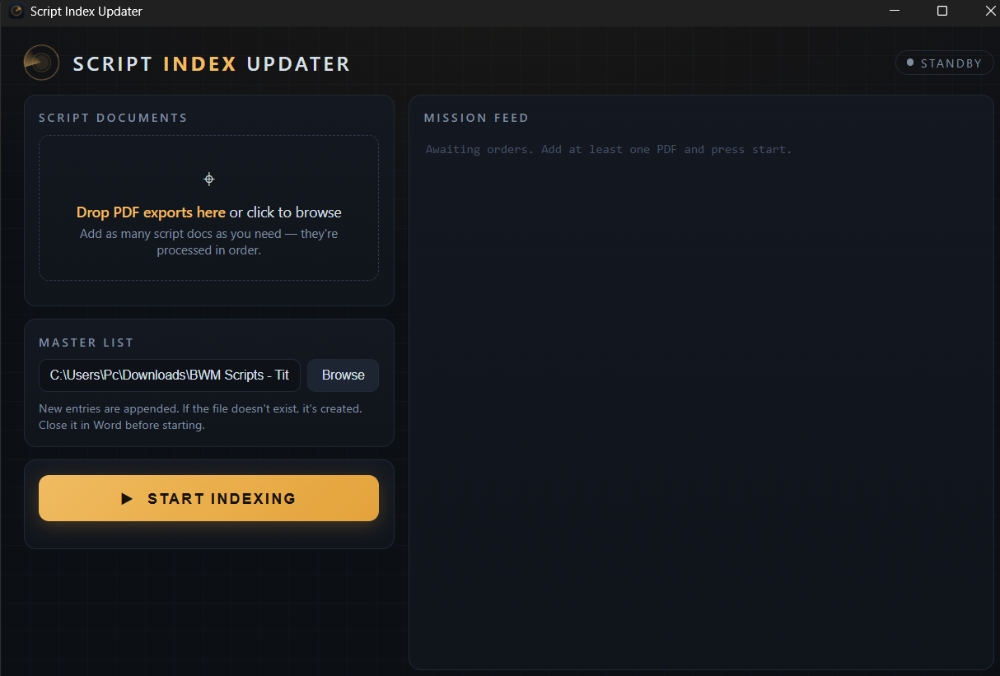

Drop in Google Docs PDF exports of your video scripts. Get back a clean, deduplicated Word master list — every title and featured subject identified automatically.

Made for YouTube channels that write scripts in a Google Doc with dozens of tabs — and need the catalogue to stay current without the busywork.
Scripts without an explicit label are read and classified by Claude running headlessly on your machine. No API key — it uses your Claude Code installation.
Entries are matched by normalized title with fuzzy near-miss review. Re-running on an updated export appends only what's new — existing rows are never touched.
Queue several PDFs at once. Each is processed in order and deduplicated against entries appended from the previous ones.
Detects dropped tab markers, merged scripts, numbering gaps, malformed titles, and non-script tabs — and tells you what to fix in your doc.
New table rows are cloned from existing ones, so fonts, borders, and column widths stay exactly as designed. New master files bootstrap from a styled template.
A dark, modern desktop app with drag & drop, a live feed of the indexing run, and a rendered mission report at the end.
In Google Docs: File → Download → PDF. All your script tabs in one file.
Drag the PDF(s) into the app — or onto its desktop icon.
The mission feed streams live as scripts are parsed, compared, and classified.
Your Word master list updates in place — new entries appended, formatting intact.
Needs Claude Code signed in on your machine — the AI runs locally through it, so there are no API keys to manage.